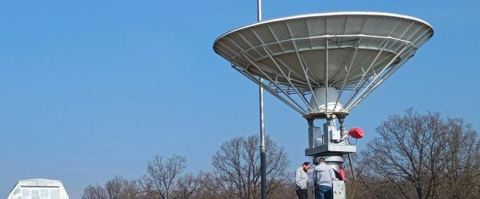

DADOS ABERTOS
ROSIE
Radio Observations of Solar Indicative Emissions
Białków Astronomical Observatory · Polônia

O instrumento
ROSIE é um instrumento dedicado à observação do Sol em frequências de rádio, instalado no Observatório Astronômico de Białków, na Polônia. O sistema produz observações solares que podem ser consultadas por meio de recursos digitais, tornando seus dados acessíveis para exploração científica e educacional.
No Open Dish Atlas, ROSIE é o primeiro estudo de caso desenvolvido em profundidade. Sua inclusão articula a documentação do instrumento científico com uma camada educacional própria, baseada na exploração de dados observacionais reais.
Exploração educacional
ROSIE constitui o primeiro caso de estudo educacional do Open Dish Atlas. A partir dos dados produzidos pelo instrumento, o ambiente educacional associado propõe uma sequência de investigação que aproxima o estudante do trabalho com observações científicas reais.
A camada educacional combina orientação da atividade com ferramentas web para representação e análise dos registros, preservando as observações do ROSIE como dados-fonte. Assim, a atividade não substitui o instrumento ou seu portal científico: funciona como uma interface educacional vinculada à sua entrada no Atlas.
Atividade associada
O ambiente educacional do ROSIE será disponibilizado dentro do Open Dish Atlas como recurso associado a esta ficha. Ele reunirá introdução ao instrumento, compreensão dos dados, seleção de observações e ferramentas de exploração no navegador.
Recursos
Fontes consultadas
- Fonte institucional do instrumento — inserir referência e URL verificadas.
- Portal de dados — inserir referência e URL verificadas.
- Documentação complementar — inserir referência utilizada na caracterização.